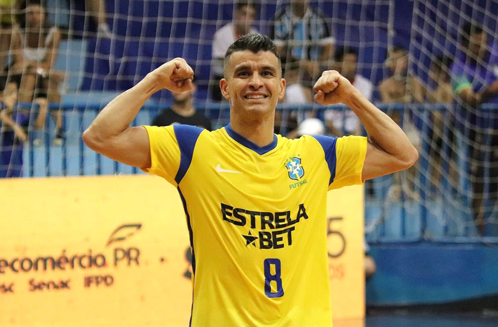
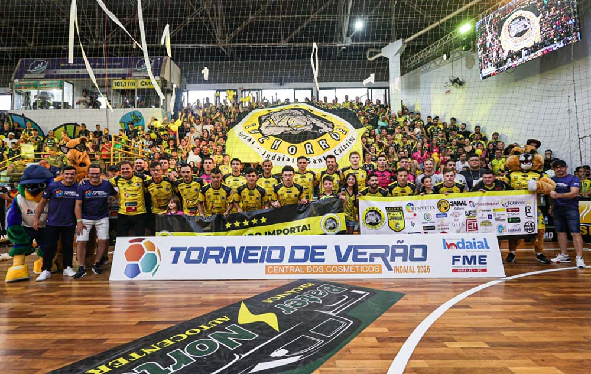
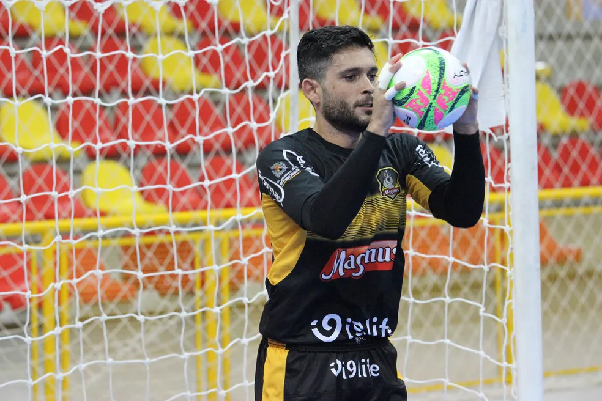
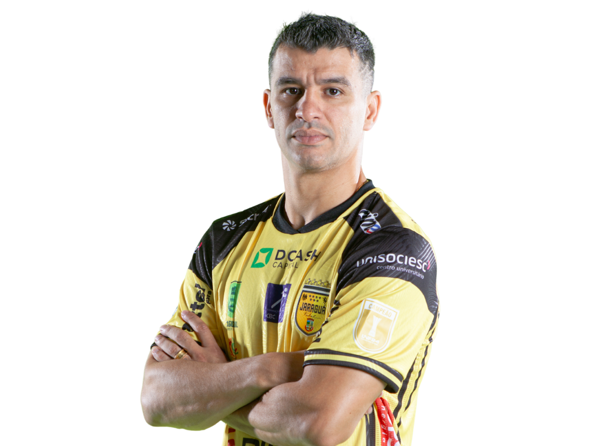

REFORÇO!! Jaraguá acerta contratação de reforço de peso!
Marcênio, ala de 38 anos que já passou pelo Barcelona Futsal, se junta ao elenco alvinegro.

Jaraguá Campeão da LNF!!
Jaraguá Futsal vence Corinthians numa final acirrada e é o primeiro hexacampeão da LNF!

Jaraguá perde torneio de verão contra amadores.
A equipe alvinegra foi à Indaial para participar do torneio de verão e foi derrotada na final pela forte equipe de Timbó.

O dia chegou! Aposentadoria..
Goleiro Thiago se aposenta após 26 anos de carreira. O jogador acumulou títulos, foi Bicampeão mundial e com mais de 40 títulos, incluindo 5 Ligas Nacionais.

Marcênio
Marcênio
Marcênio
Marcênio